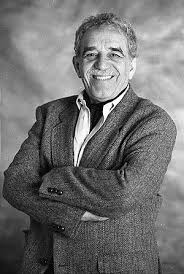
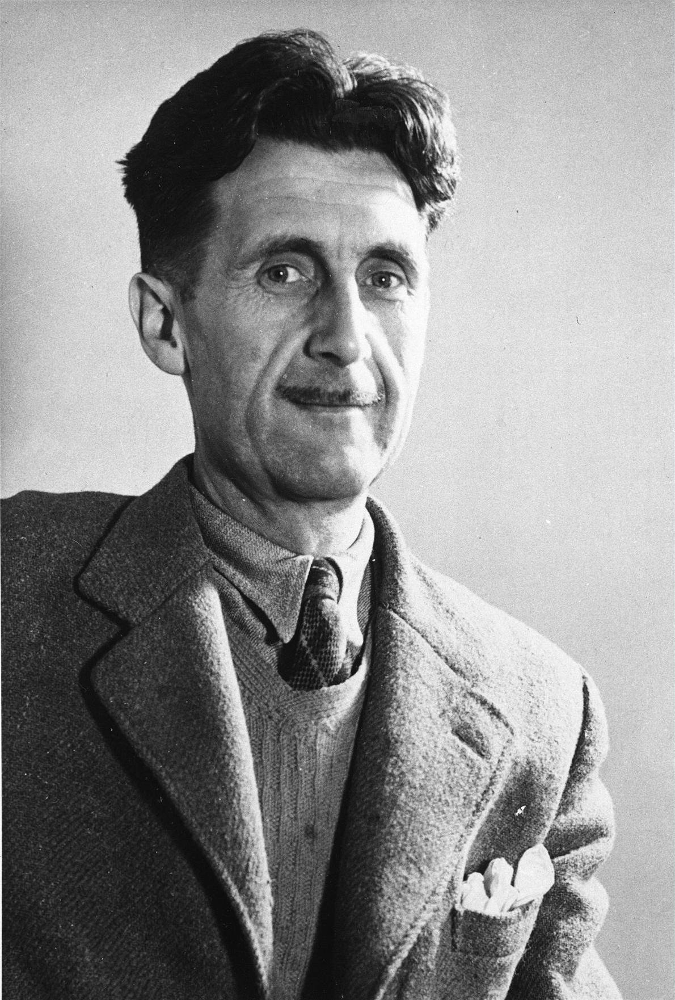

| Gabriel García Márquez |
 |
Gabriel García Márquez fue un novelista colombiano y ganador del Premio Nobel conocido por su maestría en el realismo mágico. Su narración combina lo extraordinario con lo cotidiano, haciendo que sus personajes y escenarios sean inolvidables.
|
- Cien años de soledad
- El amor en los tiempos del cólera
- Crónica de una muerte anunciada
|
Para conocer más sobre la vida de Gabriel García Márquez da clic aquí.
|
| George Orwell |
 |
George Orwell fue un autor y periodista británico conocido por sus puntos de vista críticos sobre el totalitarismo y la injusticia social. Sus obras siguen siendo muy relevantes y continúan provocando reflexión y discusión.
|
- 1984
- Rebelión en la granja
- Homenaje a Cataluña
|
Para conocer más sobre la vida de George Orwell da clic aquí.
|
| Stephen King |
|
Stephen King es un maestro del terror y la ficción, habiendo escrito numerosas novelas que cautivan a los lectores de todo el mundo. Su habilidad para crear atmósferas inquietantes y personajes complejos lo ha establecido como un icono en el género del horror.
|
|
Para conocer más sobre la vida de Stephen King da clic aquí.
|
| Haruki Murakami |
|
Haruki Murakami es un escritor japonés que ha conquistado al mundo con sus obras introspectivas que exploran el vacío existencial, la alienación y los misterios del amor. Sus narrativas a menudo combinan lo surrealista con lo cotidiano.
|
- Kafka en la orilla
- 1Q84
- Norwegian Wood
|
Para conocer más sobre la vida de Haruki Murakami da clic aquí.
|
| H.P. Lovecraft |
 |
H.P. Lovecraft fue un escritor estadounidense conocido por su creación del subgénero de horror cósmico, donde lo desconocido y lo incomprensible toman el primer plano. Sus historias de horror psicológico han dejado un legado perdurable.
|
- La llamada de Cthulhu
- En las montañas de la locura
- El color que cayó del cielo
|
Para conocer más sobre la vida de H.P. Lovecraft da clic aquí.
|